ERC20代币批量转账实现和解析(一)
如果你对区块链和ERC20代币没有概念，请先阅读入门知识
批量转账，指的是在一笔 ETH 交易中转多笔代币到不同的账户，一般用于 ERC20 代币项目启动时对用户进行空投。
批量空投的好处主要有两个，一是省 GAS 费，但事实上省得不多；二是省时间，这是最主要目的。以太坊是以交易为粒度打包，如果转账只能单对单，即使一次发起多笔单对单的交易，等待这些交易被打包的时间也非常漫长，而且还有笔数上限限制。将多笔转账放到同一个交易中，被打包确认的速度就会非常快。一般 ERC20 代币项目启动时都会大撒币，空投地址动辄都是几万几十万，批量空投接口对效率会有上百倍的提升。
文章主要内容
- 在本机部署ETH私有链
- 在ETH私有链上发布ERC20代币
- 三种批量转账方式的原理
- 三种批量转账方式的实现
- 如何解析批量转账
由于文章较长，所以这里分为两篇，本篇主要讲前两个部署环境的部分，熟悉部署的同学可以跳过本章
在本机部署ETH私有链
本机默认是在Mac OS X上进行安装，别的系统的安装可以在github上查看Ethereum Installation Instructions
geth安装
推荐使用Homebrew进行安装，简单快捷
brew 是 Mac 下的包管理工具，和Ubuntu里的apt-get类似
brew tap ethereum/ethereum
brew install ethereum创建私有链
首先新建一个文件目录，例如ethprivate
要搭建私有链必须有一个创世区块，创世区块的信息写在一个json文件中，例如genesis.json文件，在ethprivate/genesis.json中写入下面的内容
{
"config": {
"chainID": 1024,
"homesteadBlock": 0,
"eip155Block": 0,
"eip158Block": 0
},
"alloc": {},
"coinbase": "0x0000000000000000000000000000000000000000",
"difficulty": "0x400",
"extraData": "0x",
"gasLimit": "0x84c060",
"nonce": "0xdeadbeefdeadbeef",
"mixhash": "0x0000000000000000000000000000000000000000000000000000000000000000",
"parentHash": "0x0000000000000000000000000000000000000000000000000000000000000000",
"timestamp": "0x00"
}这里将gasLimit设置大一点，防止后面部署合约的时候报
Error: exceeds block gas limit undefined的错误信息，这是因为合约所需的gas超过了区块的最大gas
创建好创世区块后，我们需要利用该创世区块去初始化区块链，需要新建一个data0目录存放区块信息
接着在主目录下，执行初始化区块链的命令
geth --datadir data0 init genesis.json看到如下信息则表明初始化成功
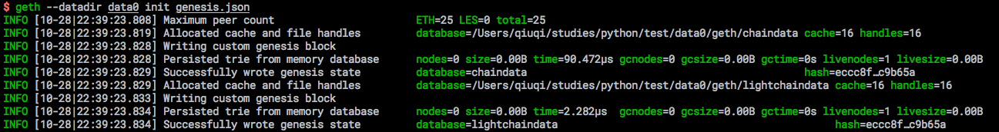
启动私有链
geth --datadir 'data0' --identity 'my_block' --port '30304' console 2>>eth_output.log参数含义
–identity：指定节点 ID；
–rpc：表示开启 HTTP-RPC 服务；
–rpcport：指定 HTTP-RPC 服务监听端口号（默认为 8545）；
–datadir：指定区块链数据的存储位置；
–port：指定和其他节点连接所用的端口号（默认为 30303）；
–networkid： 指定私有链网络号；
–nodiscover：关闭节点发现机制，防止加入有同样初始配置的陌生节点。看到下面的信息表示私有链成功启动
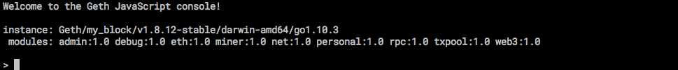
创建账户
现在刚启动还没有任何账户
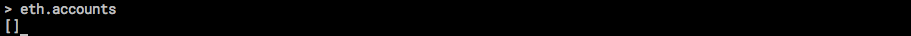
我们利用personal创建账户
personal.newAccount()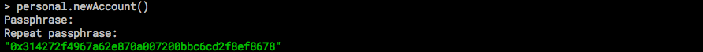
Passphrase 就是密码，连续输入两次密码便可以创建一个账户
除了personal，geth命令行中还包含了另外的对象
eth：包含一些跟操作区块链相关的方法
net：包含以下查看p2p网络状态的方法
admin：包含一些与管理节点相关的方法
miner：包含启动&停止挖矿的一些方法
personal：主要包含一些管理账户的方法
txpool：包含一些查看交易内存池的方法
web3：包含了以上对象，还包含一些单位换算的方法按照这中方式可以多创建几个账户，在后面使用
挖矿
我们刚开始还没有进行挖矿，所以eth.accounts[0]中的余额为0
eth.getBalance(eth.accounts[0])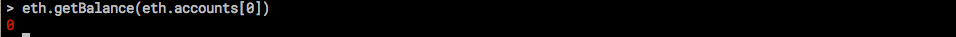
挖矿所得的ETH会默认存在
eth.accounts[0]的账户当中
通过miner.start()来启动挖矿，利用miner.stop()停止挖矿
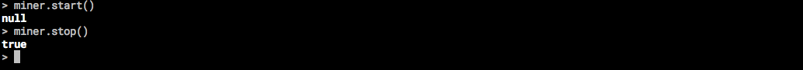
miner.start()会返回null，推荐使用tail -f eth_output.log查看日志，这样就可以看到挖矿的信息
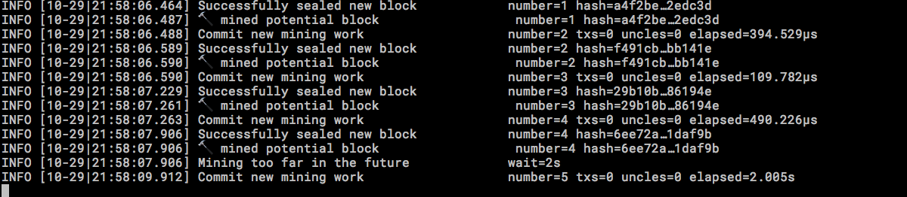
现在我们查看账户的余额就不在是0了
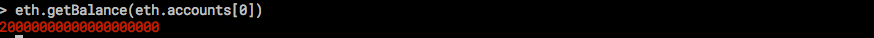
每挖到一个区块会奖励5个以太币，日志中可以看到到目前为止挖到了5个区块，那么就应该是20个以太币，可是查看的余额却不是这样，这是因为这里默认的单位是Wei，有关单位可以去移步以太币(Ether)单位
可以利用下面的命令转换单位
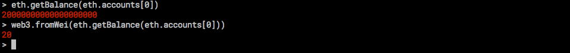
这里只做简单的介绍，其余的命令大家有感兴趣的可以自行查找
合约标准
ERC20是Fabian Vogelsteller在2015年末提出的以太坊改进建议，它是许多流行的合约都在遵循的标准。
ERC20使通证智能合约的行为非常类似于传统的加密货币，例如在不同账户之间发送和接收、查看通证总供应量或者查看某个地址可用的通证余额，就像比特币或以太币一样。这类似于用以太坊钱包 发送和接收以太币、查看流通中的以太币总量、查看特定钱包的货币余额等。
ERC20规定了一些标准的接口
contract ERC20Interface {
string public constant name = "Token Name";
string public constant symbol = "SYM";
uint8 public constant decimals = 18; // 18 is the most common number of decimal places
function totalSupply() public constant returns (uint);
function balanceOf(address tokenOwner) public constant returns (uint balance);
function allowance(address tokenOwner, address spender) public constant returns (uint remaining);
function transfer(address to, uint tokens) public returns (bool success);
function approve(address spender, uint tokens) public returns (bool success);
function transferFrom(address from, address to, uint tokens) public returns (bool success);
event Transfer(address indexed from, address indexed to, uint tokens);
event Approval(address indexed tokenOwner, address indexed spender, uint tokens);
}简单的介绍一下，更加详细的介绍可以在github查看
name ： 代币名称
symbol： 代币符号
decimals： 代币小数点位数，代币的最小单位
totalSupply() : 发行代币总量。
balanceOf(): 查看对应账号的代币余额。
transfer(): 实现代币交易，用于给用户发送代币（从我们的账户里）
transferFrom(): 实现代币用户之间的交易
allowance(): 控制代币的交易，如可交易账号及资产
approve(): 允许用户可花费的代币数在ETH私有链上发布ERC20代币
ERC20是Fabian Vogelsteller在2015年末提出的以太坊改进建议，它是许多流行的合约都在遵循的标准。
ERC20使通证智能合约的行为非常类似于传统的加密货币，例如在不同账户之间发送和接收、查看通证总供应量或者查看某个地址可用的通证余额，就像比特币或以太币一样。这类似于用以太坊钱包 发送和接收以太币、查看流通中的以太币总量、查看特定钱包的货币余额等。
ERC20规定了一些标准的接口
contract ERC20Interface {
string public constant name = "Token Name";
string public constant symbol = "SYM";
uint8 public constant decimals = 18; // 18 is the most common number of decimal places
function totalSupply() public constant returns (uint);
function balanceOf(address tokenOwner) public constant returns (uint balance);
function allowance(address tokenOwner, address spender) public constant returns (uint remaining);
function transfer(address to, uint tokens) public returns (bool success);
function approve(address spender, uint tokens) public returns (bool success);
function transferFrom(address from, address to, uint tokens) public returns (bool success);
event Transfer(address indexed from, address indexed to, uint tokens);
event Approval(address indexed tokenOwner, address indexed spender, uint tokens);
}简单的介绍一下，更加详细的介绍可以在github查看
name ： 代币名称
symbol： 代币符号
decimals： 代币小数点位数，代币的最小单位
totalSupply() : 发行代币总量。
balanceOf(): 查看对应账号的代币余额。
transfer(): 实现代币交易，用于给用户发送代币（从我们的账户里）
transferFrom(): 实现代币用户之间的交易
allowance(): 控制代币的交易，如可交易账号及资产
approve(): 允许用户可花费的代币数编写合约代码
先编写一个符合ERC20标准的代码
pragma solidity ^0.4.16;
interface tokenRecipient { function receiveApproval(address _from, uint256 _value, address _token, bytes _extraData) public; }
contract TokenERC20 {
string public name;
string public symbol;
uint8 public decimals = 18; // 18 是建议的默认值
uint256 public totalSupply;
mapping (address => uint256) public balanceOf; //
mapping (address => mapping (address => uint256)) public allowance;
event Transfer(address indexed from, address indexed to, uint256 value);
event Burn(address indexed from, uint256 value);
function TokenERC20(uint256 initialSupply, string tokenName, string tokenSymbol) public {
totalSupply = initialSupply * 10 ** uint256(decimals);
balanceOf[msg.sender] = totalSupply;
name = tokenName;
symbol = tokenSymbol;
}
function _transfer(address _from, address _to, uint _value) internal {
require(_to != 0x0);
require(balanceOf[_from] >= _value);
require(balanceOf[_to] + _value > balanceOf[_to]);
uint previousBalances = balanceOf[_from] + balanceOf[_to];
balanceOf[_from] -= _value;
balanceOf[_to] += _value;
Transfer(_from, _to, _value);
assert(balanceOf[_from] + balanceOf[_to] == previousBalances);
}
function transfer(address _to, uint256 _value) public {
_transfer(msg.sender, _to, _value);
}
function transferFrom(address _from, address _to, uint256 _value) public returns (bool success) {
require(_value <= allowance[_from][msg.sender]); // Check allowance
allowance[_from][msg.sender] -= _value;
_transfer(_from, _to, _value);
return true;
}
function approve(address _spender, uint256 _value) public
returns (bool success) {
allowance[msg.sender][_spender] = _value;
return true;
}
function approveAndCall(address _spender, uint256 _value, bytes _extraData) public returns (bool success) {
tokenRecipient spender = tokenRecipient(_spender);
if (approve(_spender, _value)) {
spender.receiveApproval(msg.sender, _value, this, _extraData);
return true;
}
}
function burn(uint256 _value) public returns (bool success) {
require(balanceOf[msg.sender] >= _value);
balanceOf[msg.sender] -= _value;
totalSupply -= _value;
Burn(msg.sender, _value);
return true;
}
function burnFrom(address _from, uint256 _value) public returns (bool success) {
require(balanceOf[_from] >= _value);
require(_value <= allowance[_from][msg.sender]);
balanceOf[_from] -= _value;
allowance[_from][msg.sender] -= _value;
totalSupply -= _value;
Burn(_from, _value);
return true;
}
}然后把这段代码拷贝到Solidity，点击旁边的Details获取部署代码
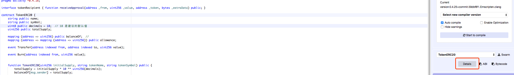
然后在弹出层中复制WEB3DEPLOY中的代码到编辑器中
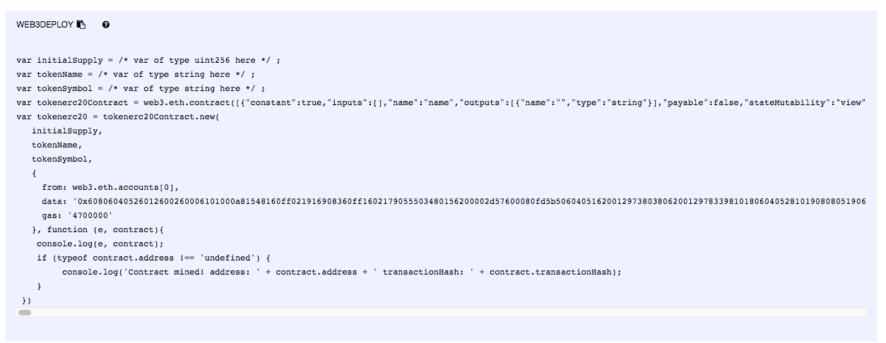
修改代码如图中所示
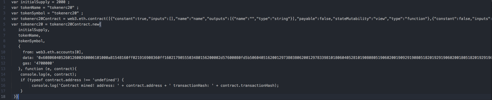
然后将代码复制到geth命令行中，按回车。然后执行miner.start()，如果出现以下信息则表明代币部署成功
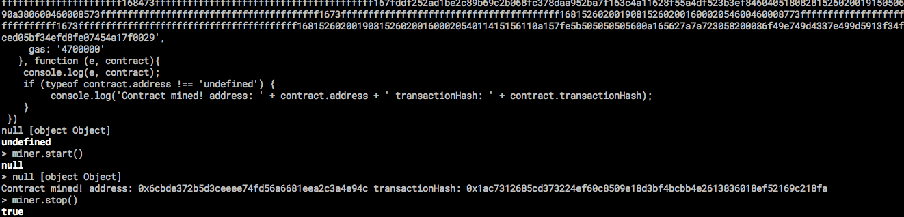
如果出现
Error: authentication needed: password or unlock undefined错误，是因为账户没有被解锁，执行personal.unlockAccount(eth.accounts[0])然后输入密码解锁账户
接着我们在命令行中输入tokenerc20则可以看到返回的接口信息
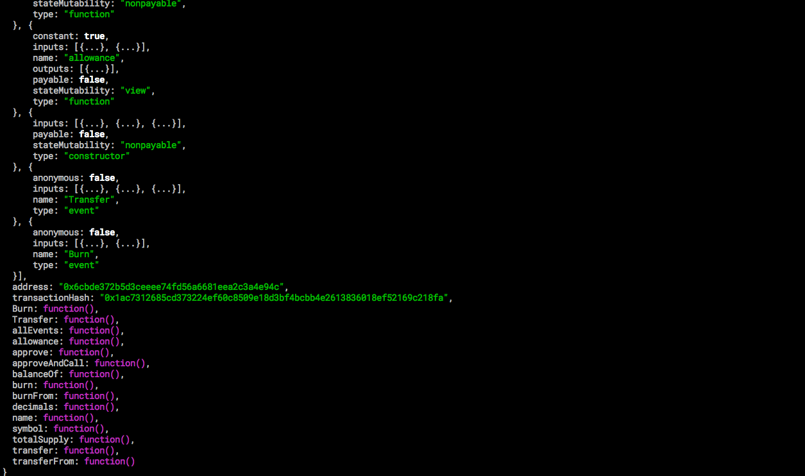
address，表示合约地址
可以利用balanceOf函数查看地址的代币余额
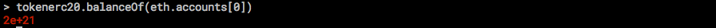
至此，合约部署完毕
下一篇文章说说ERC20空投合约的三种实现方式
%2Fthumbnail.png)

%E6%8E%88%E6%9D%83%E7%B1%BB%E5%9E%8B%2Fthumbnail.png)

%E5%AE%9E%E7%8E%B0%E7%AE%80%E5%8D%95%E7%9A%84OAuth2.0%E6%B5%81%E7%A8%8B%2Fthumbnail.png)
%E6%A6%82%E8%BF%B0%2Fthumbnail.png)